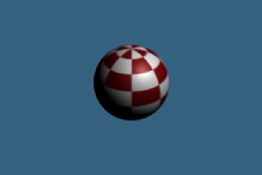
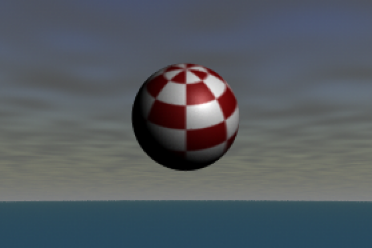
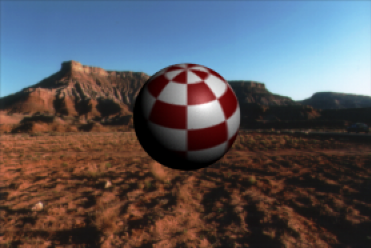

注： 本主题介绍了在渲染场景中更改背景的方法。有关在工作时更改视口背景色的信息，请参见
更改视图面板背景色。
通常，在背景为黑色的场景中渲染对象，并稍后使用合成软件将渲染的图像与相应的背景合成。但是，您可以插入背景：
- 以避免对背景对象或风景建模，但希望在场景中以 2D 方式显示它们（特别是在不能访问合成软件时）.
- 作为临时参照（尤其是对位或运动匹配）以便为场景中的对象建模或设置动画。
注： 在 Maya 中创建背景时，可以为特定摄影机创建该背景。从该摄影机渲染场景时，背景会包括在渲染的图像中。如果从其他摄影机渲染该场景，将不包括背景。有关摄影机的详细信息，请参见
Maya 摄影机类型。
颜色背景
颜色背景将一种纯色（例如，黑、白或红色）整体应用到渲染场景的背景。

为当前摄影机创建基本颜色背景
- 从面板菜单中选择“视图 > 摄影机属性编辑器”(View > Camera Attribute Editor)。
- 在“属性编辑器”(Attribute Editor)中的“环境”(Environment)区域下，设置“背景色”(Background Color)属性。
若要移除颜色背景，请将“背景色”(Background Color)设置回黑色。
纹理背景
纹理背景使用图像平面上的 2D、3D 或环境纹理模拟 3D 背景或环境。

创建纹理背景
- 从面板菜单中选择“视图 > 摄影机属性编辑器”(View > Camera Attribute Editor)。
- 在“属性编辑器”(Attribute Editor)中的“环境”(Environment)区域下，单击“图像平面”(Image Plane)属性右侧的“创建”(Create)按钮。
这将创建图像平面并将其连接到摄影机。
- 将图像平面的“类型”(Type)属性设定为“纹理”(Texture)。
- 单击“纹理”(Texture)属性旁边的纹理图标 。
- 在显示的“创建渲染节点”(Create Render Node)窗口中，选择要用作背景的纹理（例如“环境纹理”(Environment Texture)）。
这会将该纹理连接到图像平面。
图像文件或影片背景
除了纹理背景，图像平面还允许您将一个图像文件、一系列图像文件或一部影片用作背景。有关更多主题，请参见图像平面部分。
